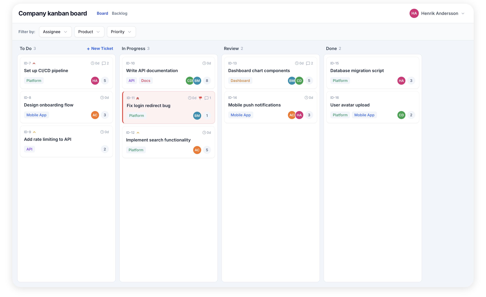
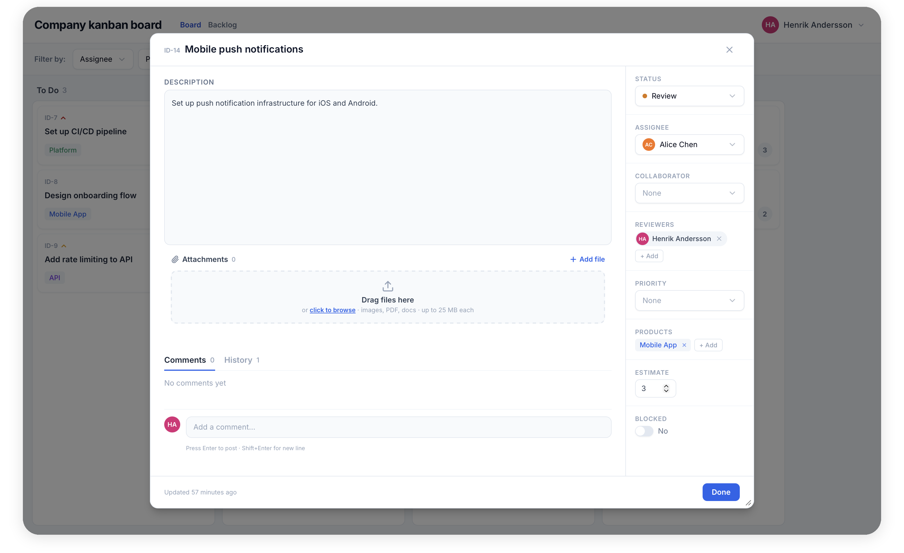
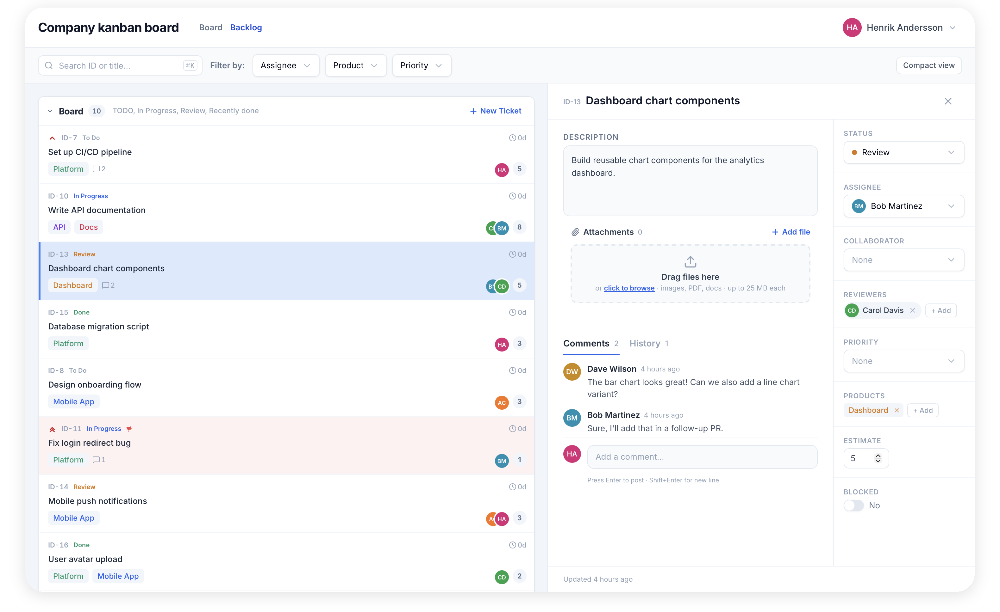
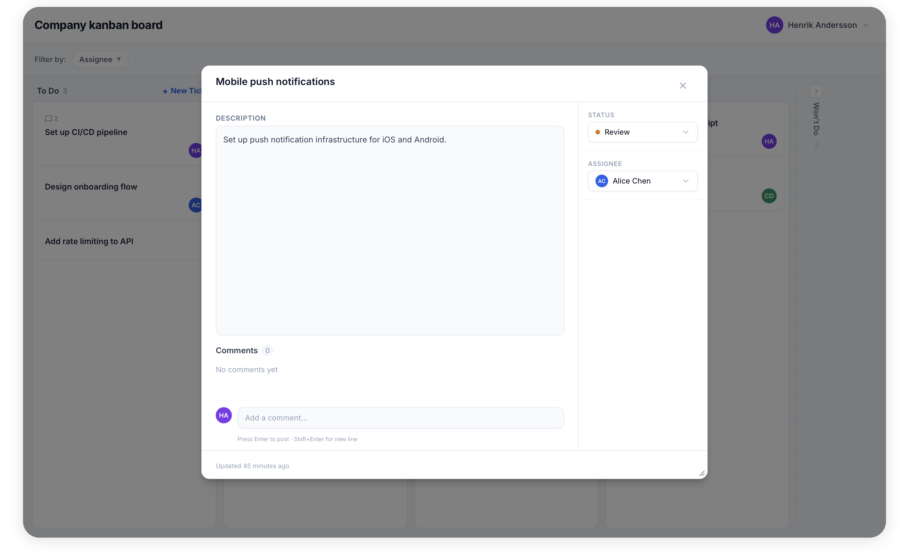
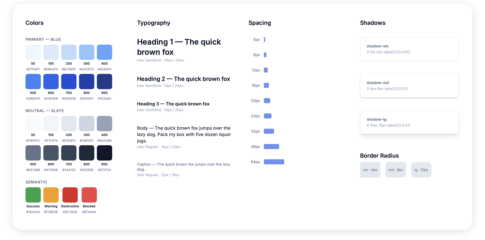

Designing and implementing a kanban board for an IT company in Asunción
Overview
I built a kanban board for an IT company in Asunción, Paraguay tailored to their needs. In my previous jobs I had not been able to use AI in my work. I took on this freelance project to learn more about using it.
Note: All screens contain test data only.
Problem
The company needed more structured handoffs and follow-ups from manager to developers. They were only using verbal communication which led to work getting lost and developers often didn't know the scope of their work. I proposed building a lightweight kanban board as a start to keep track of the work, as well as teaching them how to work with it.
Outcome



The manager and developers reported after a month:
- Work could now be tracked and was not getting lost since each task has a ticket
- Handoff was clearer since the manager had to formulate it in text and agree on scope with the developers
Process
Making an MVP
I decided to start with an MVP. I wanted to see what was being used and how, or if it was being used at all. After interviews with the manager of the company I started with the initial version according to their basic needs.
I then continuously checked in on a weekly basis to see how they were using the board in their work and proposed new features to implement with that in mind.

Design and implementation workflow
I decided to set up a workflow for my design and implementation like this:
- Ideate layouts in plain HTML with coding agent
- Set up a design system together with coding agent
- Refine in Figma
- Export back to coding agent for implementation

What I'd do differently today
I quickly realized that for this case Figma was an unnecessary step. In a small solo project where no external design communication is needed, prototyping directly in HTML by giving design feedback directly to the coding agent works quickly and removes a tedious step in the process.